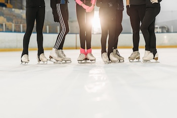
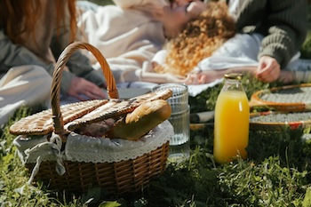
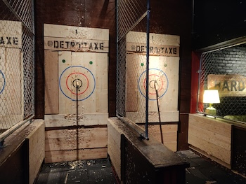
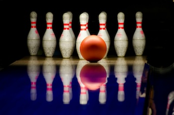
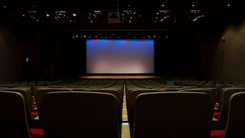
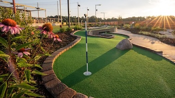

Where to go?
Places to go? Sometimes we have a lot of things that we could do in your city, but sometimes we live in places with almost nothing to do. Here, I give tips for dates you could spend money on and places you don’t need to spend money to have fun. So, from a simple to a fancy one, you will have a variety of places to go and have fun with your date, or even you can have other ideas from my ideas, and this is why I am here to give you a spark!
Roller Skating
Roller skating is always a fun activity, especially if you don’t know how to do it. It's an excellent opportunity to hold hands with someone and learn how to skate together. Even if one or both of you fall on the ground, it can be funny and make the situation even cuter. It's a great way to spend time with someone and smile a lot.
Ice Skating
Ice skating is pretty much the roller skating date, but the difference is the ice. So it is a perfect date during the winter, especially if ice skating is outdoors in your city.
Picnic
Picnic is a charming date, is suitable for spring, summer, and fall there are the best seasons to do this date. So, if you are in one of these seasons, give it a shot. Also, it is one of the options that you don’t have to spend money on. You can ask your date to bring her favorite snack, and you get yours and enjoy each other’s food.
Axe Throwin
This one is highly competitive; for those who like sports and are more energetic, it is a perfect option, very fun and very competitive. So make sure to get the vibe from the other person and surprise them with this fun date. The same goes for shooting guns.
Bowling
Bowling is a classic one. People usually love going to the bowling. Also, it is a competitive date to go. It is good to go during the winter because it is cold outside, so, during the bowling, you guys can feel more comfortable in terms of weather. Also, it is a suitable date to take more friends with you.
Movie Theater
This is an easy one to invite to go. Movies are always good in the Movie Theater. Be careful that people usually think being asked to watch a film means you want to make out, so make sure you are comfortable and clear your intentions before inviting that person.
Mini Golf
Mini golf is a more expensive date. Usually, people spend more money when the person is worth it or when it is not the first date. But it is a really good date, and even people who don’t know how to play golf have a lot of fun when they try it.
Escape Room
People usually say that before getting married to someone, it is good to take them to an escape room. It is good to see how people get under pressure. It can be fun or stressful, but you will definitely leave the escape room knowing more about the person.

Dinner
Dinner is a classic one. It can be breakfast or lunch; this is good for talking, getting to know the person better, and trying new restaurants and new kinds of food. This is always an option for the first, second, or whatever date.